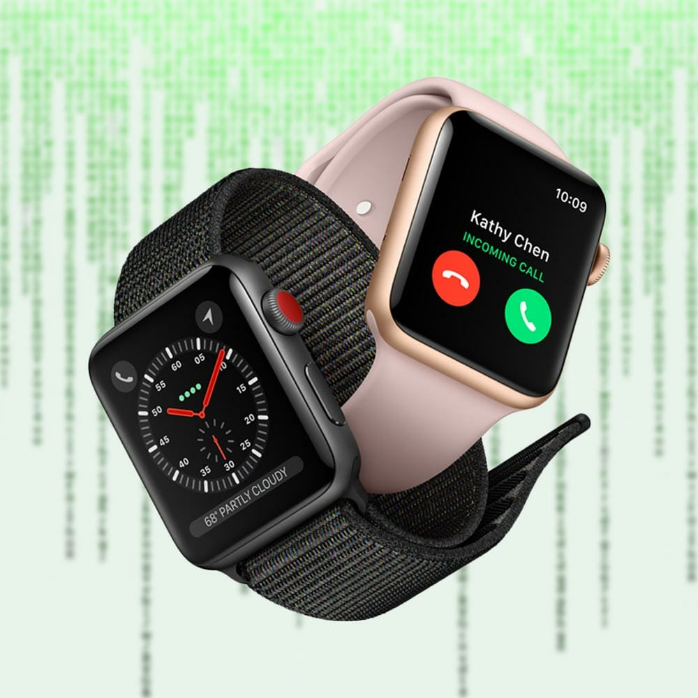
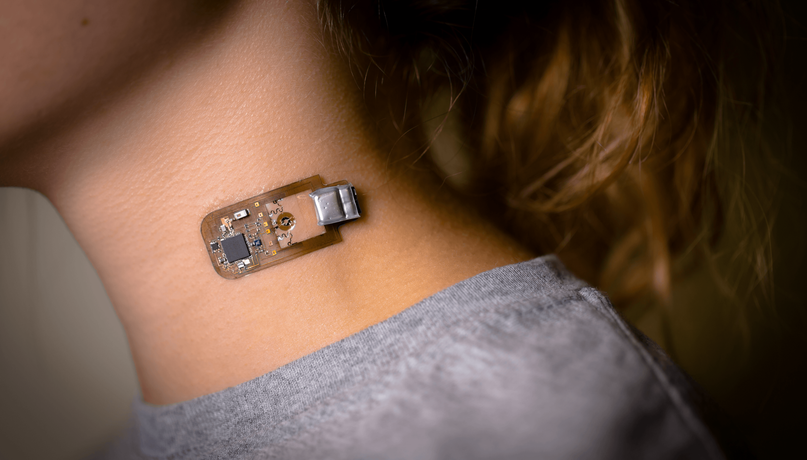
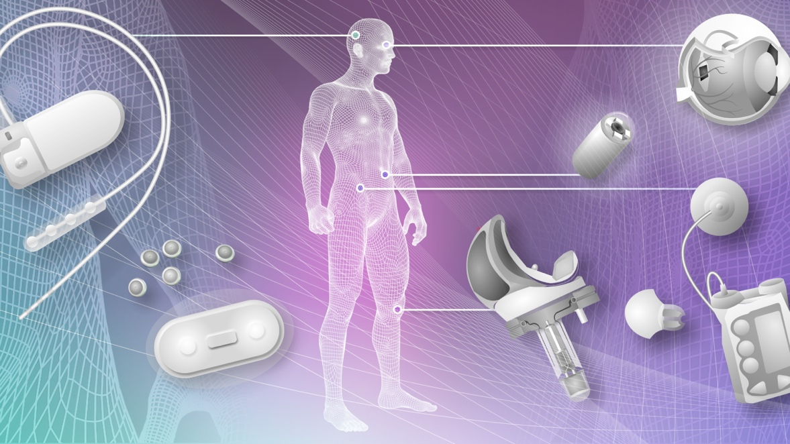

1. SMARTWATCHES
Smartwatches are wrist-worn devices that connect to your mobile phone to provide quick “at-a-glance” access to your digital life.
The mighty Apple Watch dominates the landscape with its GPS and LTE models in the realm of smartwatches.
The watch can collect and deliver calls and notifications from the iPhone, tracks physical and health activity, all in an AI-backed interface that’s easy to use. Beyond the Apple Watch, Google’s Wear OS is the equivalent for Android phone users.
Android smartwatches offer slim designs and are great for men’s and women’s wrists alike. In the past, other smartwatch makers decided to create their own watch OS’s, as was the case with Samsung and its own Tizen OS.
2. FITNESS TRACKERS
Fitness trackers remain very popular among people who want to track progress through heart rate, steps, and estimated calorie burn while receiving some smartphone notifications.
They’re perfect if you don’t/want super-advanced metrics provided by sports watches or don’t want a mini smartwatch like the Apple Watch. Moreover, compared to smartwatches, fitness trackers offer longer battery life.
Nowadays, most fitness trackers are waterproof and provide a wide range of functions such as:
- heart-reate tracking
- sleep tracking
- VO2 max
- UV
- CO2
- swim tracking
- smartphone notification
- weeks of battery life
Fitbit’s devices remain some of the best, with great looks, low prices, great accuracy, and excellent overall quality.
4. HEAD-MOUNTED DISPLAYS
Wearable technology has expanded from small pieces of technology on the wrist to apparel all over the body.
Head-mounted displays are a general category of wearable technology devices covering several segments such as virtual reality and augmented reality glasses, and even social media smart glasses, like those launched by Snapchat a few years back.
5. hearables

Hearables is a now fading term used to describe early in-ear devices designed to listen to music and communicate, hands-free, with your others and your personal AI. The term was popularized by Bose Frames, an innovative device for that time, designed to use the skull bone’s conductive property to deliver audio in a new way.
6. WEARABLES IN FASHION
Clothes have social, psychological, and physical functions, and with the use of technology, these attributes can be further amplified. Connected clothes, smart clothes, E-textiles, digital textiles, or even fashionable wearables are terms used to describe garments and accessories that combine aesthetics and style with functional technology.
Garments are the interface to the exterior mediated through digital technology, allowing endless possibilities for the dynamic customization of apparel. In this sense, wearable technology augments both the functional and aesthetic perspectives.
When made from a functionalist perspective, designers and engineers create wearables to provide convenience to the user, to help and simplify the lives of the wearers. For example, with the help of smartwatches, people can track health, connect, and communicate on the go. On the other hand, smart fabrics interact with the user by sensing the customer’s overall body moves.
7. WEARABLE TECHNOLOGY IN GAMING
The gaming industry depends on the constant adoption of the latest technological innovations. The first gadget used for electronic gaming was a controller for Pong, and since, the way we play games has evolved year after year. Nowadays, the two most common forms of “controlling” a game are via a controller, video game consoles, or a mouse and keyboard for PC games.
But, since it was introduced to the general public in 2012, virtual reality headsets have changed the way we play games and the gaming industry. VR headsets were first conceptualized in the 1950s but officially launched in the 60s. The creation of the first virtual reality headset can be credited to Cinematographer Morton Heilig. Heilig created a device known as the Sensorama in 1962, a video game-like device so heavy that it needed to be held up by a suspension device.Since then, numerous wearable technology devices have reached the gaming industry market, from VR gloves to footboards and sensorial suits. In 2016 Sony debuted its first portable, connectable virtual reality headset codenamed Project Morpheus, rebranded for PlayStation in 2018.
8. WEARABLES & CONSUMER HEALTH DEVICES
A huge growth area for wearable technology is consumer health; we’re not just talking about improving fitness here but medical class sensors found in consumer wearable products designed to save lives.The FDA-approved electrocardiogram (ECG) in the Apple Watch can detect signs of A-Fib, while it’ll also check for an irregular heartbeat at regular intervals.
The fall detection tool can alert the emergency services/contacts if you take a tumble. It’s tools like these that are broadening the appeal of wearables to new audiences. The Dream 2 headset – seeking out FDA approval – is taking on chronic insomnia with cognitive behavioral therapy. The company says 80% of its users experience relief after just six weeks. There are wearable blood sugar monitors, blood pressure monitors, and even sweat trackers that’ll tell you when you need to hydrate.
9. EPIDERMAL (SKIN) ELECTRONICS
Epidermal electronics is an emerging field of wearable technology, termed for their properties and behaviors comparable to those of the epidermis, or outermost layer of the skin. These wearable tech devices are mounted directly onto the skin to monitor physiological and metabolic processes, both dermal and subdermal. Wireless capability is typically achieved through a battery, Bluetooth, or NFC, making these devices convenient and portable as a type of wearable technology.
Currently, the usage of epidermal technology is limited by existing fabrication processes, and epidermal electronics are developed in fitness and medical monitoring. “Mechanically invisible” to the wearer, the thin, soft, flexible design of epidermal electronics resembles that of temporary tattoos laminated on the skin. Several materials are used to achieve skin-like properties; photolithography patterned serpentine, gold nanofilm, and patterned doping of silicon nanomembranes. Research into printing epidermal electronics directly on the skin is currently available as a sole study source.
10.IMPLANTABLES
Wearable technology can be found not just outside the body but also residing inside, as smart implants or implantables. Implantables are already used as 3d printed organs, birth control pills (as is the case of MicroCHIPS’ collaboration with the Gates Foundation to create an implantable female contraceptive chip), and even brain control interfaces and AI chipsets – see Elon Musk’s Neuralink project.
A new range of implantable chipsets (also known as technology-enhanced weight loss intervention chipsets) is under clinical trial for secondary outcomes relating to physical activity, baseline weight, and long-term weight loss. Other implantable chipsets extract users’ behavioral weight loss approaches to understand if and how body temperature, body fat, body mass impact activity levels and any adverse events we can avoid.